La bitácora de avances, día por día. Lo último, arriba.
se actualiza a cada release · las capturas salen del test automático (Playwright)
10 de julio de 2026
🎶 La popular SUENA: el canto de Dálmine, en chiptune
Al llegar a Campana ahora se escucha EL canto de la popular —"dale dale dale dale vio, dale dale
dale dale vio, daleeeeee daleeee viooooooo"— compuesto en chiptune con el motor de audio del juego (cero
archivos, todo Web Audio en vivo), con el bombo de la banda marcando los tiempos fuertes. Suena en la calle
del estadio y en la tribuna, y se corta de golpe cuando el portal te chupa. También lo podés escuchar desde el
panel de debug (🎶).
audiochiptuneVilla Dálmine 💜bombo
9 de julio de 2026
💜 LA ODISEA A CAMPANA: piquete de la UBA, el clásico, y Villa Dálmine vs CADU
La quest más grande del juego hasta ahora, de punta a punta. El maquinista de Villa Ballester no te lleva a
Campana (está en pedo)… pero hay una vuelta:
Tomás el tren ROJO de la San Martín en Retiro y el tren frena en Ciudad Universitaria: hay un
piquete de estudiantes de la UBA sobre las vías por el recorte del presupuesto universitario, justo
en la sede del CBC (la estudiante del piquete es un NPC con IA). Y al lado… el Monumental, con el
clásico River-Boca.
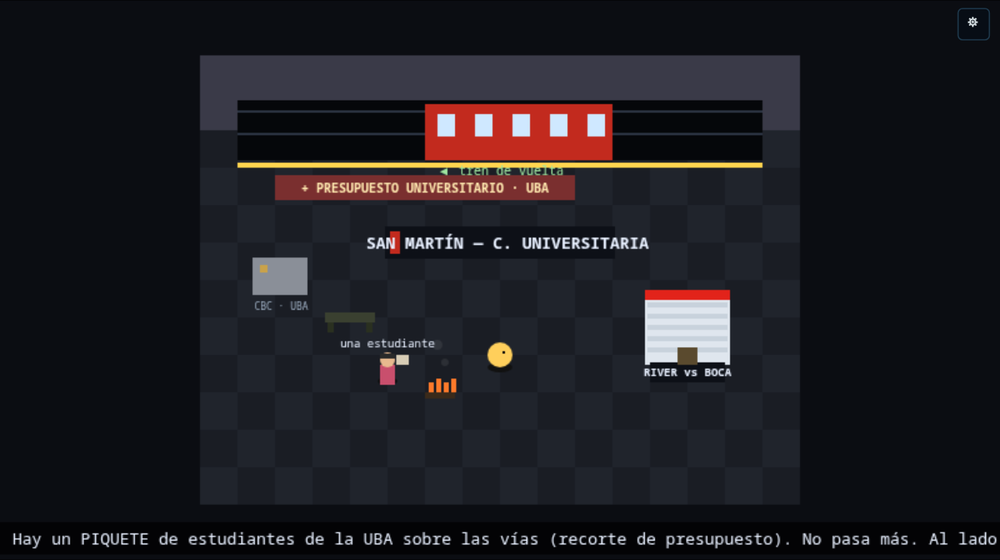
Ciudad Universitaria — el tren rojo parado, el piquete de la UBA, el CBC, y el Monumental ahí nomás.
Te colás a la cancha, alentás a River a los gritos, y del lado visitante manoteás una bandera de
Boca. Se la llevás al maquinista de Ballester y —milagro futbolero— se le pasa el pedo de golpe:
te lleva gratis a Campana.
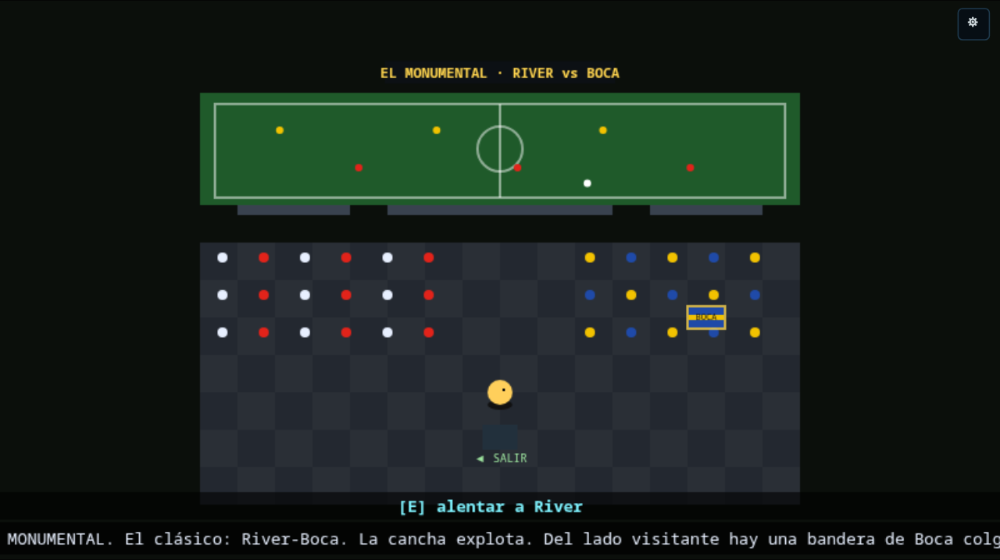
El Monumental — el clásico, tu tribuna de River, y la bandera de Boca brillando del lado visitante…
En Campana pasás por la escalinata, te sumás a la banda violeta —y te cruzás con
el Tano, un hincha de toda la vida, socio vitalicio y ex obrero de la fábrica Dálmine, NPC con IA
que te cuenta la historia del club de barrio— y entrás al Coliseo de Mitre y Puccini: juegan Villa Dálmine vs CADU, el clásico de la zona. En el entretiempo te clavás
el mejor chori de tu vida (+vida completa) y en el segundo tiempo gritás los 4 goles de Dálmine…
hasta que un satélite de la IA maligna cae del cielo, rasga el espacio-tiempo y un portal te
devuelve al búnker del loop, al lado de tu cama. ¿Fue real? Tenés olor a chori.
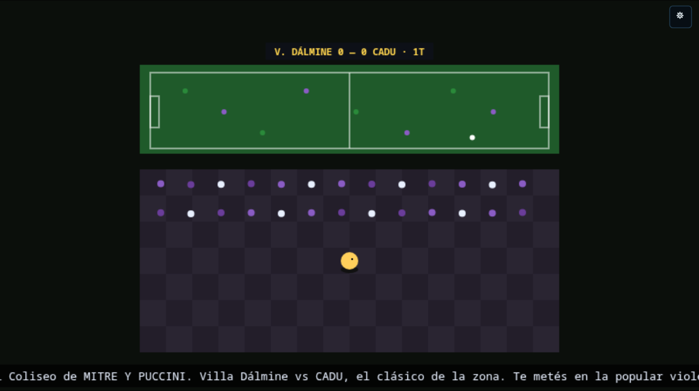
Mitre y Puccini — la popular violeta, Dálmine vs CADU. Faltan el chori, los 4 goles… y el portal. 💜
odiseaUBA ✊River-BocaVilla Dálmine 💜portal
9 de julio de 2026
🍷 Villa Ballester: el maquinista se pasó de copa
Uno de los destinos de tren ahora tiene historia. Llegás a Villa Ballester, donde se combina para
Campana… pero el tren no sale: el maquinista se quedó en la parrilla del andén con una tira
de asado y vino, y se pasó de copa. Hay parrilla humeante, el cartel de "CAMPANA — DEMORADO", y podés
charlar con el maquinista (un NPC con IA, curda simpático que no maneja en pedo, "primero la seguridad").
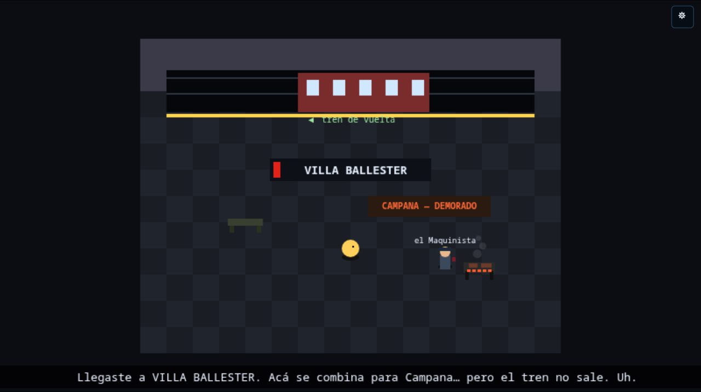
Villa Ballester — el maquinista, la parrilla con la tira de asado, y el servicio a Campana… demorado.
Es el arranque de una odisea más grande que estamos construyendo (San Martín, el clásico, la
hinchada, Campana y Villa Dálmine…). De a poco.
Villa BallesterNPC con IAasado 🔥quest
9 de julio de 2026
🚆 Ahora se toma el TREN: de las terminales a los ramales
Los molinetes de tren de Constitución y Retiro dejaron de ser decorado: te parás en el molinete,
elegís un ramal (La Plata, Ezeiza, Tigre, Cañuelas…) y tomás el tren. Hay un viaje con el
paisaje que scrollea —tematizado por destino: ciudad, río del delta, campo, aeropuerto— y llegás a un andén de
destino donde te bajás, mirás el cartel de la estación y tomás el tren de vuelta.
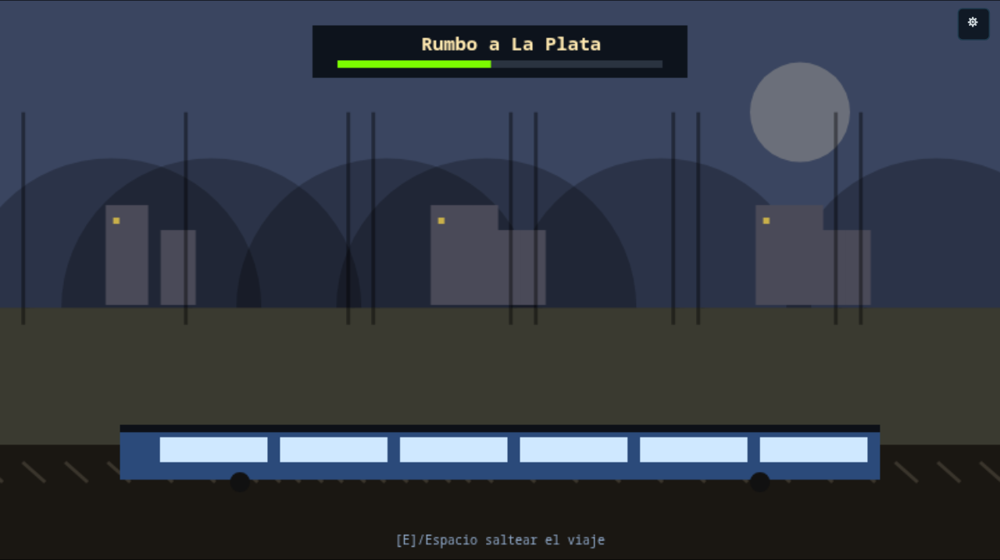
El viaje — el paisaje pasa (acá "ciudad", rumbo a La Plata) con el tren en primer plano y la barra de progreso.
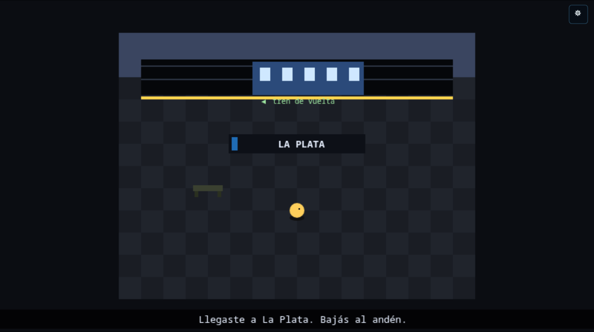
El andén de destino — te bajás, mirás el cartel y tomás el tren de vuelta a la terminal.
trenConstitución/Retiroramalesmundo abierto
8 de julio de 2026
🍲 Retiro, la Línea San Martín y la Villa 31 (con comedor popular e iglesia del Padre Mugica)
Seguimos la red de tren para el otro lado: la Línea C ahora también te lleva a Retiro, la gran
terminal del norte —la bóveda de hierro y vidrio del Mitre, los molinetes de las líneas Mitre, San Martín y
Belgrano—. Y de Retiro salís a la calle: siguiendo las vías de la Línea San Martín llegás a la
Villa 31 (Barrio Padre Mugica), ahí nomás atrás.
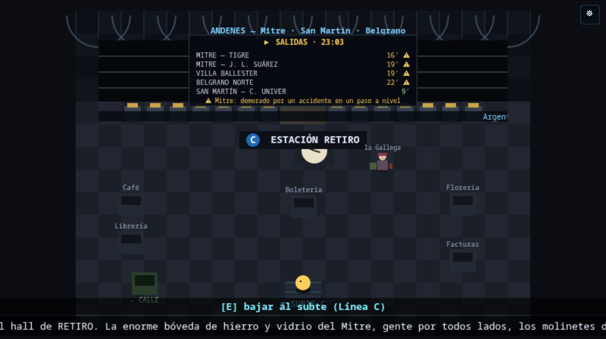
Estación Retiro — el hall del Mitre. La salida "→ CALLE" te lleva a la Villa 31.
En la Villa 31 una referente te contrata para el comedor popular (Doña Rosa, con la olla al fuego), y
podés visitar la iglesia del Padre Mugica (la capilla Cristo Obrero) y charlar con el cura villero.
Los dos son NPCs con IA: Doña Rosa habla del barrio, el hambre y la solidaridad; el cura, con una mirada
peronista y holística, une el Evangelio, la justicia social y la idea de que todo está conectado.
Y ya se puede laburar en la olla: agarrás un plato del fuego y se lo servís a cada vecino de la cola;
cuando les diste a todos, Doña Rosa te agradece y te paga la changa. 🍽️
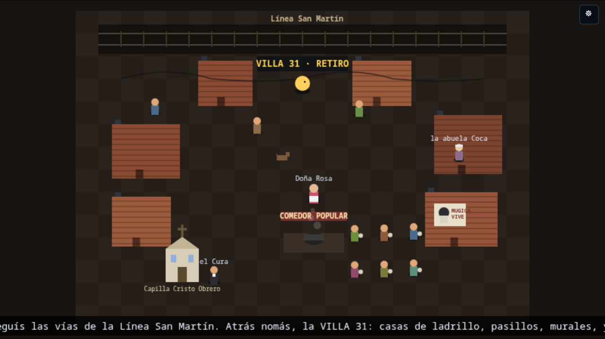
Villa 31 (Barrio Padre Mugica) — el comedor popular (Doña Rosa) con la cola de vecinos para servir, y la capilla Cristo Obrero (el cura).
RetiroVilla 31comedor popularPadre MugicaNPCs con IA
8 de julio de 2026
🚆 Arranca la red de tren: la terminal de Constitución
Ganar el Nivel 2 ya no termina el juego: te sale la pantalla de "¡Ganaste!" pero ahora podés
seguir jugando. Se te habilita la Línea C del subte (la que une Retiro con Constitución) y podés
viajar a la gran terminal del Roca: el hall abovedado, el reloj histórico, los molinetes del tren con los
ramales (La Plata, Ezeiza, Korn…) y los locales del andén.
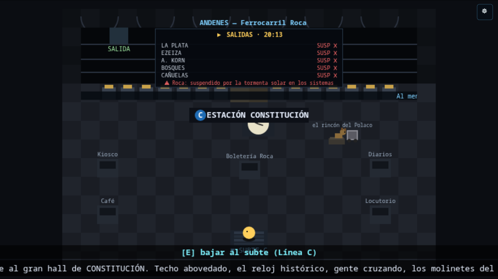
Estación Constitución — el hall del Ferrocarril Roca (los locales son mock por ahora; los iteramos).
Es la primera etapa de una expansión más grande: después vienen Retiro, la Línea San Martín y
Villa 31 con un comedor popular. Todo data-driven y metido en el grafo de la historia.
Nivel 2subte/trenmundo abierto
8 de julio de 2026
🔔🎗️ El Cabildo de Mayo: la campana, la escarapela y dos próceres con IA
En Plaza de Mayo ahora entrás al Cabildo y podés repicar la campana: la primera vez
caen escarapelas y agarrás una (guiño al 25 de mayo de 1810). Si la volvés a tocar, la campana
toca el Himno (la parte de "o juremos con gloria morir", con timbre de carillón).
Y con la escarapela puesta aparecen granaderos y dos personajes nuevos: Domingo French y
Antonio Luis Beruti —los que repartían las cintas en 1810—, chateables con IA y memoria. Hablan
solo de la Revolución de Mayo y la Independencia… y te confían que notaron "algo raro": el tiempo que se tuerce,
hechos que se repiten. No saben que es la IA manipulando el espacio-tiempo.
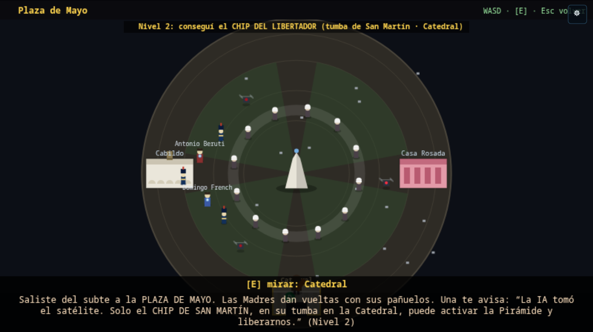
Plaza de Mayo — el Cabildo (izq.) con Domingo French y Antonio Beruti; la Pirámide y las Madres al centro; la Casa Rosada (der.).
CabildoNPCs con IAhistoria 🇦🇷música chiptune
8 de julio de 2026
🐛 Arreglado: el chat ya no se cuelga
Había un bug feo: después de un par de mensajes, el chat con los NPC se "colgaba" y no respondía hasta que
cerrabas y volvías a abrir. Era un candado interno que no se soltaba si algo fallaba al procesar la
respuesta. Ahora se libera pase lo que pase. No tiene nada que ver con la IA ni con tu suscripción.
fixchat IA
6–7 de julio de 2026
🎵 Música chiptune en vivo, sin un solo archivo de audio
Todo el audio se compone en tiempo real con Web Audio (cero mp3). Sumamos varios temas nuevos según
dónde estés: la Marcha Peronista en el piquete, el Himno Nacional en el Obelisco, un chiptune
oriental (pentatónico) al entrar al súper chino, un motor heavy criollo con distorsión para
Cemento, y cinco cumbias villeras distintas que suenan al azar en el edificio abandonado y la cueva.
audiochiptune
3–4 de julio de 2026
🚇 El subte te lleva a Plaza de Mayo — el Nivel 2
Ganás el piquete de Lavalle, herís al satélite y aparece la boca del subte. Con la tarjeta
SUBE (o un boleto que te vende el boletero) pasás el molinete y viajás entre estaciones reales
(Florida, Lavalle, Catedral). Catedral te deja en Plaza de Mayo, donde arranca el Nivel 2: entrás
a la tumba de San Martín en la Catedral, sacás el chip del Libertador, esquivás los drones de la
IA y lo armás en la Pirámide de Mayo — la señal sube a los satélites y arranca la liberación, con
cinemática de cierre.
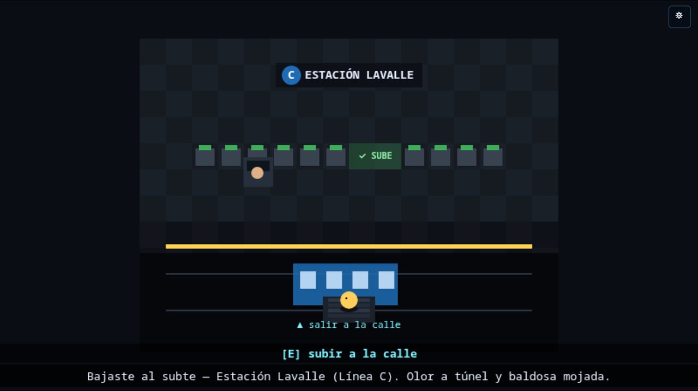
Estación Lavalle (Línea C) — los molinetes leen tu tarjeta SUBE; el tren llega al andén.
Nivel 2subteSan Martín
4 de julio de 2026
🗺️ El mapa del barrio, pulido
El mapa tiene tres vistas —la cuadra (skyline), la manzana (los cajones de edificios) y los subsuelos— más
una pestaña de subte con el plano de las líneas. Lo movés con las flechas/WASD (cursor caja a
caja) y ahora hay un minimapa en el HUD mientras jugás. También se ve mejor cuánta gente hay online
por sala.
mapaUX
¿Querés el detalle técnico de cada cosa? Está en el
CHANGELOG
del repo. Y si te interesa la infra que lo hace andar, mirá Cómo funciona.